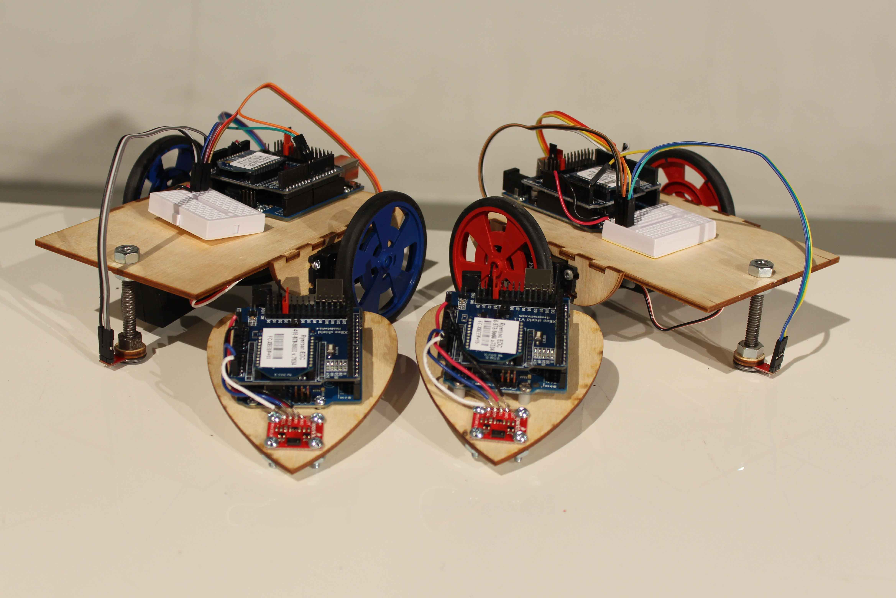
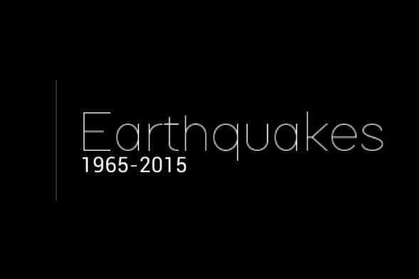
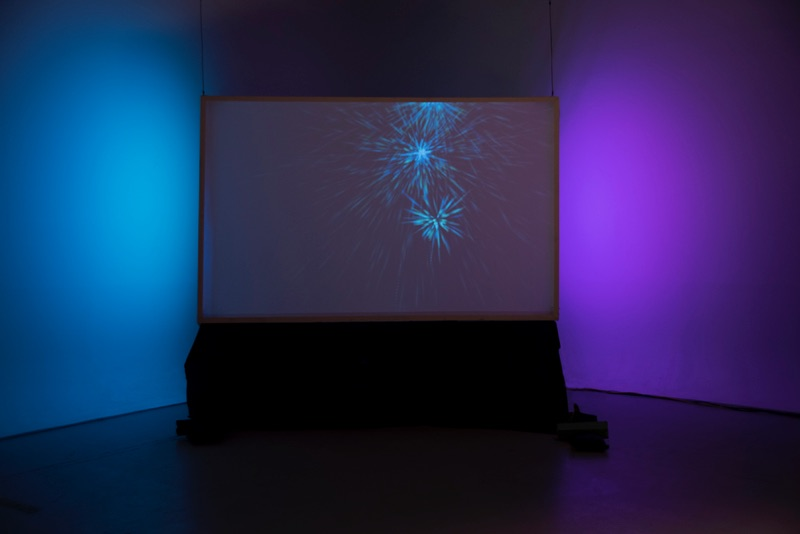
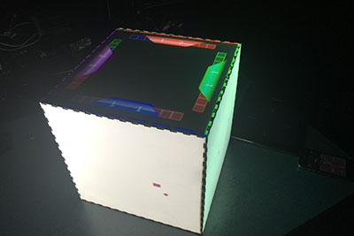
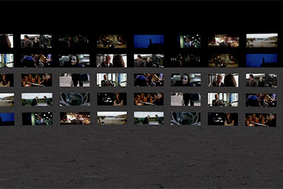
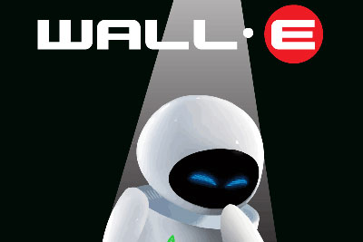
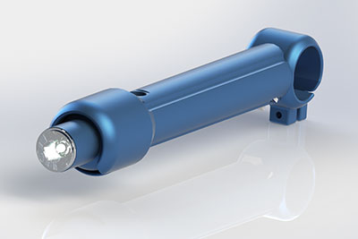
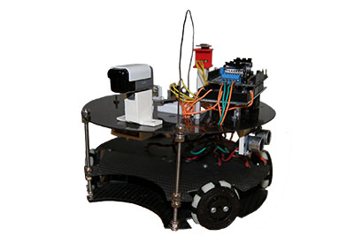
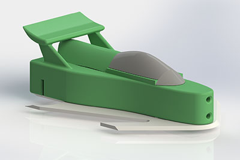
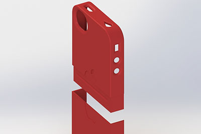

HeartBeat Racers:
is a small-scale robot installation that uses two people’s heart rate to determine their robot’s speed across a line.

Earthquakes:
takes the public earthquake data from the past 100 years and transforms it into an interactive map.

The Veil:
The Veil is a project that uses white spandex as a screen that the user can touch to create visuals.

Snake:
Snake is a project that went from a simple one player game to a wireless eight player installation.

Trailer:
Trailer is a 10 second movie trailer I did in first year for The Dark Knight.

Poster:
Poster is a movie poster I did in first year.

Bike Light:
Bike Light is a bike light I made out of electronics, a 3d printer and aluminium for a buisness project in grade 12.

Soccer Robot:
Soccer Robot was a project I did in grade 11, for the project I created a robot that competed in the 2013 RoboCup in Eindhoven, Nl.

GT Racer:
GT Racer is a project I did in grade 11. Our challenge was to design a 3d printed racecar that used a few specific parts to build the fastest racecar.

iPhone 4 case:
When first being introduced to 3d modeling, our class was told that if we created something worthy of printing, our teacher would print it. This was worthy.